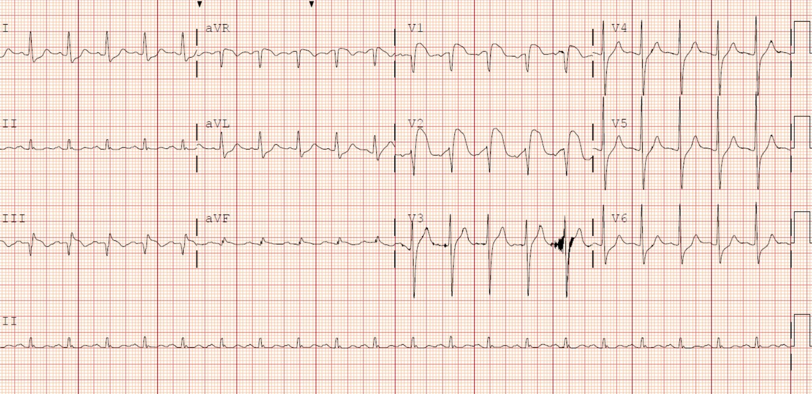
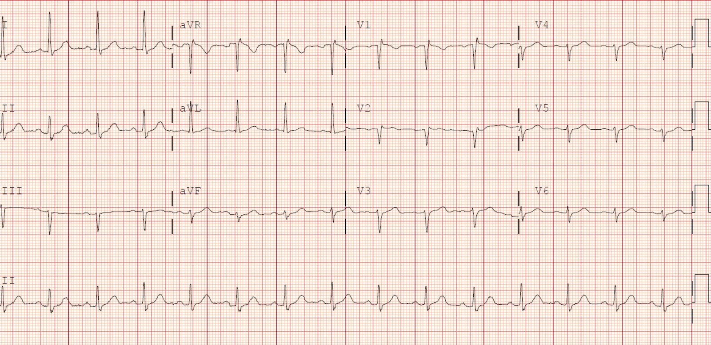
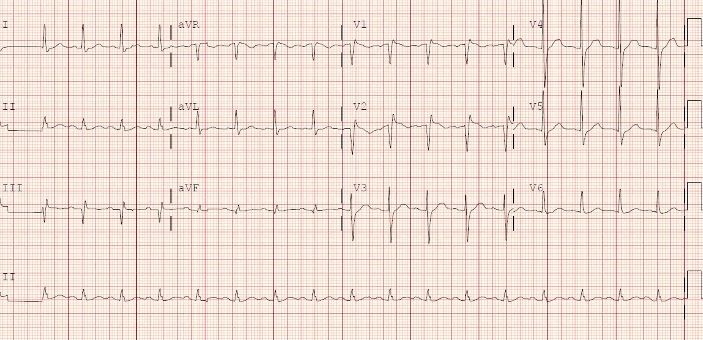
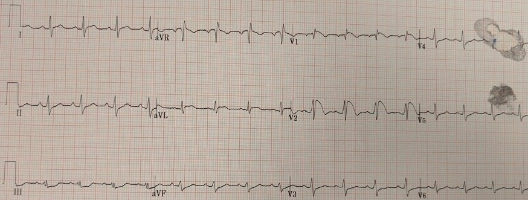
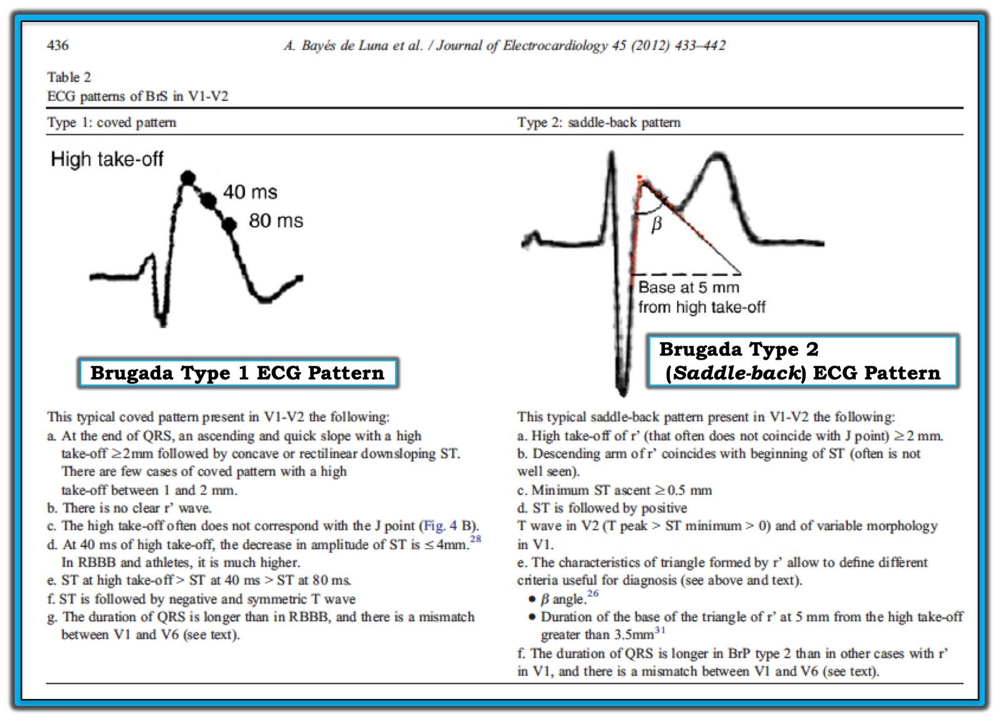

30/01/2019 — Tăng thân nhiệt và ST chênh lên
Bản dịch tiếng Việt của bài "Hyperthermia and ST Elevation" – Dr. Smith’s ECG Blog. Giữ nguyên toàn bộ 7 hình ảnh của bản gốc.
Ca này do Alexandra Schick gửi. Dr. Schick là bác sĩ nội trú năm thứ 3 (PGY3) của Chương trình Nội trú Y học Cấp cứu Brown ở Rhode Island. Tôi nhớ rõ Allie từ thời cô ấy tham gia chương trình tình nguyện viên Nghiên cứu tại Hennepin.
Bài viết được Smith biên tập.
Tiêu đề: Chỉ là ở đây nóng hay đó là OMI?
Một
phụ nữ cao tuổi đến viện vì rối loạn ý thức; bà được
gia đình phát hiện nằm trên giường trong căn hộ của mình vào một ngày hè nóng (103 °F)
và được nhìn thấy lần cuối ba giờ trước đó. Bà lơ mơ, không làm theo
lệnh, giảm oxy máu và suy hô hấp. Khi đến nơi, đội cấp cứu ngoài viện (EMS) đã thông khí cho bà bằng bóng-van-mặt nạ, và bà nhanh chóng được đặt nội khí quản với etomidate và
succinylcholine. Nhiệt độ đo ở trực tràng là 107,9 °F.
Ngoài ra, các dấu hiệu sinh tồn sau đặt nội khí quản chỉ đáng chú ý ở nhịp tim nhanh.
Một
điện tâm đồ ban đầu đã được ghi:


Có nhịp nhanh
xoang tần số 124, trục bình thường, QRS 92, QTc 460, ST chênh xuống dốc lên ở
I, aVL, V4 – V6 kèm ST chênh lên dạng lõm ở V1 (3mm) và V2 (5mm), và III (1mm)
kèm sóng Q ở V1, V2, III. Sóng T đảo ngược ở III, aVR, sóng T dẹt (TWF) ở aVF.
Đây là điện tâm đồ cũ của bà:


Chẩn đoán phân biệt của điện tâm đồ này là gì? Đây có phải OMI không?
Chúng tôi
đã nghĩ tới OMI, vì có ST chênh lên kèm thay đổi soi gương (III và aVL), nhưng
ST chênh lên ở III không phù hợp với hình ảnh này.
Hình ảnh ST chênh lên và ST chênh xuống này khiến chúng tôi nhớ tới hình thái Brugada típ 1.
Bình luận của Smith:
1) Điện tâm đồ Brugada có thể có dịch chuyển ST ở chuyển đạo chi cũng như ở chuyển đạo trước tim. Xem thêm hình ở cuối bài này.
2) ST chênh lên ở V1 và V2 có sóng R’ và đoạn ST dốc xuống, rất không điển hình cho STEMI.
3) ST chênh lên dốc xuống tương tự ở V1 và V2 kèm rsr’ cũng gặp trong tăng kali máu (xem nhiều ca ở bài này):
This ECG is NOT Pathognomonic of Brugada Syndrome (Điện tâm đồ này KHÔNG đặc hiệu chẩn đoán hội chứng Brugada)
Ca bệnh tiếp diễn:
Siêu âm tim tại giường (POCUS) không phát hiện rối loạn vận động thành khu trú nào, chức năng thất trái tăng động.
Liệu điều này có thể do nhiệt độ trung tâmtăng cao gây ra? Hay có thể do tác dụng của thuốc hoặc rối loạn chuyển hóa?
Chúng tôi
bắt đầu làm mát tích cực cho bệnh nhân và trong vòng một giờ
nhiệt độ của bà đã giảm xuống 101,1 °F (trực tràng).
Một điện tâm đồ ghi lại được
thực hiện vào thời điểm đó và cho thấy như sau:


Đến lúc này, một số xét nghiệm đã có kết quả, cho thấy troponin I là 0,348 ng/mL (giá trị bình thường ở phòng xét nghiệm của chúng tôi là dưới 0,060)
<0 .060="" div="">
Các xét nghiệm bất thường khác chỉ gồm:
pH 7,18, pCO2 61, K 5,1, Bicarbonat 20, Lactat 4,2, Amoniac 100.
Khoa tim mạch được mời hội chẩn và họ đồng ý rằng điện tâm đồ có hình thái không điển hình cho STEMI, và đã không kích hoạt phòng thông tim.
Troponin I được xét nghiệm lặp lại theo thời gian và lần lượt là 0,353 rồi 0,296.
Siêu âm
tim chính thức được thực hiện vào ngày hôm sau và một lần nữa cho thấy
phân suất tống máu bình thường, không có rối loạn vận động thành khu trú nào
gợi ý bệnh động mạch vành (CAD). Troponin tăng được cho là do nhồi máu cơ tim típ 2 hoặc do tổn thương cơ tim cấp không phải nhồi máu.
Hiện tại không có thăm dò thêm.
Smith: Đây là một ca vừa được một cựu bác sĩ nội trú nhắn tin cho tôi hôm nay. Đó là một bệnh nhân đau ngực:


Cũng chú ý rằng còn có: ST chênh lên ở aVL và ST chênh xuống soi gương ở thành dưới.
Bệnh nhân này đã được loại trừ nhồi máu cơ tim.
Các bất thường ở chuyển đạo chi dường như là một phần của hình ảnh Brugada, như được mô tả trong bài báo này:
Inferior and Lateral Electrocardiographic RepolarizationAbnormalities in Brugada Syndrome (Các bất thường tái cực trên điện tâm đồ ở thành dưới và thành bên trong hội chứng Brugada)
BÀN LUẬN
Thay đổi điện tâm đồ Brugada típ 1 có liên quan đến đột tử
do tim (SCD) và sự xuất hiện rối loạn nhịp thất.
Những bệnh nhân xuất hiện hình ảnh típ 1 mà không có bất kỳ yếu tố thúc đẩy hay
khởi phát nào có nguy cơ SCD 0,5-0,8% mỗi năm. Ở những bệnh nhân
chỉ có hình ảnh này khi được gây ra bởi thuốc chẹn kênh natri
thì tỷ lệ SCD thấp hơn (0 – 0,35% mỗi năm)[1]. Các thuốc từng được ghi nhận
có liên quan đến hình ảnh điện tâm đồ Brugada gồm thuốc chống trầm cảm ba vòng,
thuốc gây mê, cocaine, methadone, thuốc kháng histamin, rối loạn điện giải, và thậm chí cả tramadol. [2].
Bệnh nhân
của chúng tôi có hình ảnh Brugada típ 1 được làm lộ ra do nhiệt độ trung tâm
tăng cao, đây cũng là một hiện tượng đã được ghi nhận. Bà đang dùng
amitriptyline 50 mg/ngày nhưng không dùng thuốc nào khác có thể ảnh hưởng đến
kênh natri. Có nhiều báo cáo ca về ST chênh lên với hình ảnh Brugada
liên quan đến sốt do nhiễm khuẩn [3, 4]. Người ta
giả thuyết rằng tốc độ bất hoạt kênh natri có thể
nhạy cảm với nhiệt độ và sốt có thể làm suy giảm dẫn truyền qua
các kênh natri [5, 6]. Trong nghiên cứu lớn nhất về chủ đề này
của Mizusawa và cs., 88 bệnh nhân có thay đổi điện tâm đồ Brugada típ 1 do sốt khởi phát
mà không có tiền sử ngất hay VF/VT đã được phân tích. Tỷ lệ mới mắc SCD
trong đoàn hệ này là 0,9% mỗi năm [1].
Trước
nghiên cứu của Mizusawa, người ta cho rằng tỷ lệ mới mắc ngất,
rối loạn nhịp hoặc SCD trong nhóm này là thấp [7]. Trong số những người có hình ảnh típ 1 do sốt
khởi phát, khoảng 80% cũng có thay đổi típ 1 do thuốc khởi phát
khi làm nghiệm pháp kích thích. Chỉ 26% trong nhóm mang
đột biến SCN5A và 20% có tiền sử gia đình bị SCD [1]. Dường
như việc có hình ảnh điện tâm đồ Brugada típ 1 chỉ bị làm lộ ra bởi sốt
báo hiệu nguy cơ SCD tương tự hội chứng Brugada tự phát, nhưng
các nghiên cứu về thực thể lâm sàng hiếm gặp này vẫn còn khá nhỏ. Hiện tại,
hướng dẫn AHA/ACC/HRS 2017 đối với bệnh nhân không triệu chứng có
các dạng hội chứng Brugada gây ra được (inducible) khuyến cáo theo dõi mà không cần bất kỳ
liệu pháp hay can thiệp đặc hiệu nào [8]. Xét đến nguy cơ
biến cố rối loạn nhịp ghi nhận trong nghiên cứu của Mizusawa, một thăm dò điện sinh lý (EP) chính thức
có thể là hợp lý ở những người có thay đổi điện tâm đồ Brugada do sốt khởi phát
không triệu chứng, để giúp phân tầng nguy cơ cho những bệnh nhân này.
Sốt
ở những người có hội chứng Brugada típ 1 tự phát đã được biết là
gây ra thay đổi điện tâm đồ típ 1; khuyến cáo điều trị tích cực mọi
cơn sốt ở những bệnh nhân này khi phát hiện. Gần đây, tỷ lệ biến cố
rối loạn nhịp thực sự liên quan đến sốt trong hội chứng Brugada típ 1
kinh điển đã được Michowitz và cs. khảo sát. Trong một đoàn hệ 588 bệnh nhân
được chẩn đoán hội chứng Brugada có biến cố rối loạn nhịp, 6%
liên quan đến bệnh lý có sốt. Bệnh nhân nhi và người cao tuổi
dễ xuất hiện biến cố rối loạn nhịp hơn trong bối cảnh
sốt [7].
Về phần bệnh nhân của chúng tôi, lúc ra viện,
điện tâm đồ của bà đã trở về hoàn toàn hình thái nền và bà
vẫn ổn định trong quá trình theo dõi. Bà chưa được thông tim
sau biến cố này nên vẫn chưa rõ có hay không có CAD.
Bà chưa được khám chuyên khoa điện sinh lý hay làm thêm xét nghiệm
di truyền về hội chứng Brugada.
Tài liệu tham khảo:
[1]:
Mizusawa Y, Morita H, Adler A, Havakuk O, Thollet A, Maury P, Wang DW,
Hong K, Gandjbakhch E, Sacher F, Hu D, Amin AS, Lahrouchi N, Tan HL,
Antzelevitch C, Probst V, Viskin S, Wilde AA. (2016). Prognostic
significance of fever-induced Brugada syndrome. Tạp chí Heart Rhythm, 13(7):
1515-1520.
[2]: Junttila MJ, Gonzalez M,
Lizotte E, Benito B, Vernooy K, Sarkozy A, Huikuri HV, Brugada P,
Brugada J, Brugada R. (2008). Induced Brugada-type electrocardiogram, a
sign for imminent malignant arrhythmias. Tạp chí Circulation, 117, 1890–1893.
[3]:
Lamelas P, Labadet C, Spernanzoni F, Lopez Saubidet C, và Alvarez PA.
(2012). Brugada electrocardiographic pattern induced by fever. Tạp chí World
Journal of Cardiology, 4(3): 84-86.
[4]: Antzelevitch C và Brugada R. (2002). Fever and Brugada syndrome. Tạp chí Pacing Clin Electrophysiol, 25(11), 1537-1539.
[5]:
Dumaine R, Towbin JA, Brugada P, Vatta M, Nesterenko DV, Nesterenko VV,
Brugada J, Brugada R, Antzelevitch C. (1999). Ionic mechanisms
responsible for the electrocardiographic phenotype of the Brugada
syndrome are temperature dependent. Tạp chí Circ Res, 85(9), 803-809.
[6]: Deschênes I và Laurita KR. (2007). How can a single mutation cause such arrhythmic havoc? Tạp chí Heart Rhythm, 4(2), 198-199.
[6]
Michowitz Y, Milman A, Sarquella-Brugada G, Andorin A, Champagne J,
Postema PG, Casado-Arroyo R, Leshem E, Juang JJM, Giustetto C,
Tfelt-Hansen J, Wijeyeratne YD, Veltmann C, Corrado D, Kim SH, Delise P,
Maeda S, Gourraud JB, Sacher F, Mabo P, Takahashi Y, Kamakura T, Aiba
T, Conte G, Hochstadt A, Mizusawa Y, Rahkovich M, Arbelo E, Huang Z,
Denjoy I, Napolitano C, Brugada R, Calo L, Priori SG, Takagi M, Behr ER,
Gaita F, Yan GX, Brugada J, Leenhardt A, Wilde AAM, Brugada P, Kusano
KF, Hirao K, Nam GB, Probst V, Belhassen B. (2018). Fever-related
arrhythmic events in the multicenter survey on arrhythmic events in
Brugada syndrome. Tạp chí Heart Rhythm, 15(9): 1394-1401.
[7]
American College of Cardiology/American Heart Association Task Force on
Clinical Practice Guidelines và Heart Rhythm Society. (2017). 2017
AHA/ACC/HRS guideline for management of patients with ventricular
arrhythmias and the prevention of sudden cardiac death. Tạp chí Heart Rhythm,
15(10), e73-e189.

———————————————————–
Bình luận của KEN GRAUER, MD (30/1/2019):
———————————————————–
Phần trình bày và bàn luận xuất sắc của Dr. Alexandra Schick (với phần biên tập của Dr. Smith) về một phụ nữ cao tuổi được khám tại khoa cấp cứu (ED) vì rối loạn ý thức, tăng thân nhiệt, và điện tâm đồ ban đầu ở trên. Ca này là một ví dụ tuyệt vời về điện tâm đồ “giả nhồi máu” do hình ảnh điện tâm đồ Brugada típ 1 do tăng thân nhiệt gây ra. Bình luận của tôi chỉ giới hạn ở một vài điểm lâm sàng bổ sung:
- Điều quan trọng là phải phân biệt giữa Hình ảnh điện tâm đồ Brugada–1 (như biểu hiện ở chuyển đạo V1, V2 của điện tâm đồ ban đầu trong ca này) — so với “hội chứng Brugada”. Ngoài hình ảnh điện tâm đồ Brugada-1 tự phát hoặc được gây ra, tiêu chuẩn của Hội chứng Brugada đòi hỏi một hoặc nhiều điều sau: tiền sử ngừng tim, VT đa dạng, hoặc ngất không do phản xạ phế vị — tiền sử gia đình có người đột tử ở tuổi trẻ — điện tâm đồ tương tự ở người thân trực hệ.
- Tiêu chuẩn điện tâm đồ để chẩn đoán hình ảnh Brugada-1 hoặc Brugada-2 được tóm tắt trong Hình 1, mà tôi trích từ tài liệu tham khảo của Bayés de Luna ghi ở phía trên của Hình. Hãy chú ý chuyển đạo V1 và V2 trong điện tâm đồ ban đầu (ở trên) rõ ràng thỏa tiêu chuẩn của hình ảnh điện tâm đồ Brugada-1.
- Điều quan trọng là làm rõ sự khác biệt giữa Hội chứng “Brugada” so với Kiểu hình sao chép “Brugada” (Brugada Phenocopy). Nhiều yếu tố có thể gây ra hình ảnh điện tâm đồ Brugada-1 hoặc Brugada-2. Bao gồm một số thuốc (tức là thuốc chẹn kênh calci; thuốc chẹn ß; thuốc chống đau thắt ngực; thuốc hướng thần; rượu (ETOH); cocaine; các thuốc khác …); — bệnh lý cấp tính có sốt (đặc biệt khi thân nhiệt tăng rất cao); — biến đổi trương lực thần kinh tự chủ — hạ thân nhiệt — mất cân bằng điện giải (tức là thường gặp trong tăng kali máu); — thiếu máu cục bộ/nhồi máu — nhịp chậm — sau sốc điện chuyển nhịp hoặc khử rung. Tên gọi Kiểu hình sao chép “Brugada” được dùng khi một bệnh nhân vốn khỏe mạnh không có yếu tố nào liên quan đến hội chứng Brugada — mà chỉ xuất hiện hình ảnh điện tâm đồ Brugada-1 do một trong các tình trạng trên — và hình ảnh Brugada-1 này mất đi khi tình trạng thúc đẩy đã được điều chỉnh. Đây dường như là điều đã xảy ra trong ca này — vì các thay đổi điện tâm đồ Brugada-1 đã mất đi khi nhiệt độ trung tâm của người phụ nữ cao tuổi này được hạ xuống.
- Ý nghĩa lâm sàng của việc phân biệt giữa Kiểu hình sao chép Brugada so với một bệnh nhân có điện tâm đồ Brugada-1 có thể do hội chứng Brugada thực sự — là tiên lượng dường như tốt hơn đáng kể ở trường hợp trước. Dù vậy — nguy cơ vẫn tồn tại ở bất kỳ bệnh nhân nào có hình ảnh điện tâm đồ Brugada-1, đó là lý do nên chuyển bệnh nhân đến bác sĩ tim mạch điện sinh lý (EP) để đánh giá nguy cơ một cách chính thức hơn.
Chúng tôi xin CẢM ƠN một lần nữa Dr. Schick đã chia sẻ ca này với chúng tôi!


==========================
LƯU Ý: Có rất nhiều ca khác của Dr. Smith về điện tâm đồ có hình ảnh Brugada trên blog này (Chỉ cần tìm kiếm Brugada Syndrome!).
- Với những ai muốn tìm hiểu thêm — tôi đã tóm tắt “Quan điểm của tôi” về những điều cơ bản của điện tâm đồ có hình ảnh Brugada trong một ECG VIDEO về chủ đề này.

PHẦN BỔ SUNG (24/10/2020): Trước đây, chẩn đoán hội chứng Brugada không chỉ đòi hỏi có hình ảnh điện tâm đồ Brugada-1 — mà còn cần tiền sử đột tử, VT bền bỉ, ngất không do phản xạ phế vị hoặc tiền sử gia đình có người đột tử ở tuổi trẻ. Định nghĩa này đã được thay đổi sau một hội đồng đồng thuận chuyên gia năm 2013 — vì vậy hiện nay, tất cả những gì cần để chẩn đoán hội chứng Brugada là một hình ảnh điện tâm đồ Brugada-1 tự phát hoặc được gây ra, không cần thêm tiêu chuẩn nào khác.